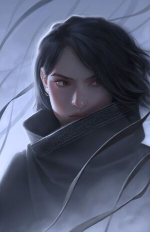

| Spouse | Elend Venture |
|---|---|
| Parents | Tevidian Tekiel, mother |
| Siblings | Reen, sister |
| Relatives | Salmen Tekiel, Kale Tekiel |
| Born | 1005 FE |
| Died | 1025 FE |
| Abilities | Mistborn, Hemalurgist, Sliver, Shard of Preservation |
| Titles | Heir to the Survivor, Empress of the New Empire, Ascendant Warrior, Hero of Ages, Lady Mistborn, Mother, Preservation |
| Aliases | Valette Renoux |
| Groups | Camon's crew (former), Kelsier's crew, Venture army, Preservers |
| Birthplace | Luthadel |
| Ethnicity | Skaa |
| Homeworld | Scadrial |
| Universe | Cosmere |
| Introduced In | Mistborn: The Final Empire |

information from The Coppermind